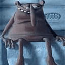

Forums galactiques > Taverne galactique : lieu de discussion informel > La société comme moyen de faire surgir l'amour mo
| Kitana Réputation à la taverne : 45 04/06 ETU 12:53 | Score : 0 Détails Tout dépend du degré d'amitié que vous entretenez avec cet ami(e)
| ||
| Zebulon Lavesse Réputation à la taverne : 30  04/06 ETU 13:18 | Score : 0 Détails Zebulon se tourna vers Kitana
-« Justement si l’amitié est intense, elle peut être considérée comme de l’amour. Mais au fond, n’est elle pas déjà de l’amour Merde? Du fait que l’amitié rapproche aussi les êtres, elle permet parfois même de tisser des liens encore plus solides que ceux qui unissent les couples… » | ||
| Kitana Réputation à la taverne : 45 04/06 ETU 13:20 | Score : 1 Détails Dans ce cas je devrais me lançer dans la haute couture.
Non mais sérieusement je pense que les liens les plus forts sont les liens amoureux ceci n'est que mon avis personnel. | ||
| Béliar Réputation à la taverne : 8 04/06 ETU 13:27 | Score : 1 Détails sur ce dernier point je vous rejoinds kitana personellement j'y ai cru comme un forcené mais il faut etre deux pour cela et je trouve ces liens plus destructifs que constructifs.personellement, j'ai passer deux ans super bien et deux autres a me scarifié parceque tout ce qui comptait pour la damoiselle c'était l'argent(moi j'ai pas ce gros probleme qu'on les gens riches a vouloir etre plus riches au détriment de tout...vive les pauvres c'est les plus heureux)et depuis que je suis célibataire j'ai reconfiance en moi et plein de potes du coup meme si jpourrais en avoir pas mal, le célibat c'est la vraie solution!!!!!!!(avec de temps en temps un passage chez des expertes quand la tension devient trop grande...)
| ||
| Béliar Réputation à la taverne : 8 04/06 ETU 13:28 | Score : 0 Détails et la société a plus créé l'homosexualité qu'autre chose je pense
| ||
| Cignia Réputation à la taverne : 125  04/06 ETU 13:29 | Score : 1 Détails Les liens amoureux sont certes les plus forts mai ils finissent par s'estomper petit a petit.
Sinon pourquoi autant de gens divorent? Je pense aussi malgres tout que l'amitié conserve un lien qui peux s'averer etre plus fort que celui de l'amour. Et l'hommosexualité n'est pas un probleme,c'est juste que les gens trouve cela anormal alors que ca ne l'ai pas du tout. | ||
| Béliar Réputation à la taverne : 8 04/06 ETU 13:35 | Score : 0 Détails je suis pas homophobe mais l'homosexualité ne se trouve que chez les especes vivant en société du coup on appel ca une abération pour les animaux mais pour les etre humains cela est normal....il y a un peu d'ambiguité la dedans non?
| ||
| Béliar Réputation à la taverne : 8 04/06 ETU 13:39 | Score : 0 Détails et l'amour physique prélude toujours a l'amour moral(enfin je pense)puisque personnellement,je ne sais pas m'introduire dans l'esprit des madames(ca serait marrant mais bon)au départ c'est plus grace au physique que la rencontre arrive sinon faut m'expliquer
| ||
| Demettra Réputation à la taverne : 348  04/06 ETU 13:39 | Score : 1 Détails Je fais partie des gens qui trouvent cela parfaitement normal.
Même si la nature ne l'a pas prévu ainsi, chaque personne est différente et possède un coté féminin et un coté masculin plus ou moins développé. Nos préférences varient en fonction du niveau de développement de chaque partie, ainsi la majorité des femmes se conduisent et se sentent comme tel, et la majorité des hommes se conduisent et se sentent comme tels. Pour une minorité c'est l'inverse. La société actuelle se contente de médiatiser et d'accepter un phénomène autrefois rejeté. C'est pour cela que l'on en entend beaucoup plus parler: les médiats ont pourtant toujours essayé de cacher ce qu'ils considéraient comme disons "politiquement incorrect" jusque au point ou la dissimulation devient impossible. Vous manquez également de delicatesse si vous avouez franchement juger au physique. L'amour est un tout pour les ètres doués de pensée. Pour les animaux c'est different: pas de sentiments. La seduction se limite à un acte de parade aboutissant à l'acouplement. | ||
| Béliar Réputation à la taverne : 8 04/06 ETU 13:49 | Score : 0 Détails tres chere demettra(ouha ca fait style je suis important:p)l'homosexualité n'est rejeté que depuis peu de temps(pour ne faire qu'un exemple rapide:la grece antique)à cause des idéaux de race supérieur d'une majorité de gens tres bete qui ne se rendent meme pas compte de ce qu'ils font et la société actuelle permet,grace aux médias,d'amplifier ce phénomène de peur de l'autre et de l'inconnu.Il y a bien des gens integre mais cette valeur se fait rare (il n'y a qu'a voir les soit disant philosophe actuels)et d'habitude ces gens la preferent rester a l'écart au lieu de faire contrepoids à la betise humaine. moi je constate juste que c'est comme pour les élections:tout le monde se dit de gauche progressiste et au final on a un gouvernement de droite...si les gens pouvaient au moins avoir le courage de leurs opinions il y aurait un peu moins de bordel et on aurait pas besoin de guerre pour faire avancer la société
| ||
| Cignia Réputation à la taverne : 125 04/06 ETU 13:50 | Score : 2 Détails je fait moi aussi partit de ceux qui trouve cela normal.
Tout dabord; -Je suis daccord pour dire que si l'on a une religion,on a le droit de considerer cela comme anormal puisque l'homme a été creé avec la femme et pas avec un homme. -Si l'on ne croit en rien je croit que l'on n'a pas le droit de se permettre de trouver cela mauvais,anormal,puisque personne n'a jammais dit que l'homme allait obligatoirement avec une femme. Ce n'est pas parce que la logique des choses(c'est a dire un homme et une femme pour le developement de la race humaine)ne s'applique pas dans ce cas la qu'il faut forcément y remedier. Si quelqun ose le faire,cette personne sera intolerante,irespectueuse,horrible envers ces personnes et portera en plus directement atteinte a leurs vie privée ,a leurs sentiment... De plus on n'a pas le droit de juger ces personne sans raison valable(l'homosexualité n'en etant pas une)tant qu'elle ne porte pas atteinte à la société "normale"comme vous le dites. | ||
| Béliar Réputation à la taverne : 8 04/06 ETU 13:51 | Score : 0 Détails et je ne manque pas de délicatesse puisque forcement vous ne pouvez savoir ce que quelqu'un a dans le crane avant de lui avoir parler et avant de parler a quelqu'un faut bien un mini quelque chose qui se passe non? ou si vous parlez a tout le monde je me demande bien ou vous trouvez le temps de faire quoi que ce soit d'autre
| ||
| Obi wan kenobi Réputation à la taverne : 43 04/06 ETU 13:52 | Score : 3 Détails Il faut de tous pour faire un monde:
-des homos -des cons -des moches -des beaux -des hétéros Mais malheureusement beaucoup de gens ne se rendent compte de cela trop tard mais la force sort les jedi de tout ces complexes humains. | ||
| Demettra Réputation à la taverne : 348 04/06 ETU 13:59 | Score : 4 Détails On peut parler avec une personne pour diverses raisons.
Il y à des questions d'aura même si certaines personnes ne le comprennent pas. Certaines personnes dégagent plus de charisme que d'autres, ou plus d'originalité ou de personnalité. Il y à aussi le charme: une personne belle n'à pas forcément de charme et vice versa. Il y a la beauté comme vous l'affirmez mais ce dernier point est subjectif car la beauté n'a pas pour tout le monde la même définition. L'intérêt des propos tenus. Bref vous parlerais-je si mes critères se basaient uniquement sur la beauté? | ||
| Béliar Réputation à la taverne : 8 04/06 ETU 14:03 | Score : 1 Détails si c'est comme ca...je boude!
et pour la subjectivité c'est pour cela(et non que j'ai un ego surdimmensionné)que je rajoute "perso" un peu partout. | ||
| Cignia Réputation à la taverne : 125 04/06 ETU 14:07 | Score : 2 Détails Pour vous repondre Béliar;
Si vos critères,comme l'a dit Demettra,sont basés uniquement sur la beauté ,vous manquez cruelement de morale. Votre logique est peut etre celle ci mais sachez qu'elle ne vous menera pas loin et puis elle va vite tomber a l'eau puisque comme l'a dit Obi wan Kenobi,il faut de tout pour construire un monde.Et si une grande partie de ce tout vous derange,personne ne peux rien y faire. Mes criteres a moi se bassent dabord sur la personalité même de la personne qui me parle,ensuite de son comportement par rappord au autre et a moi même,ensuite à son inteligence et par la suite et en dernier recours a son apparence.Il peux y avoir des criteres intermediaires mais les principaux sont la. | ||
| Obi wan kenobi Réputation à la taverne : 43 04/06 ETU 14:14 | Score : 3 Détails Béliar regardez!!!Cignia prend comme je suis pourtant je suis un boulet et moi je la accept malgré quelle soit belle intelligente.
hrp:xd:hrp | ||
| Cignia Réputation à la taverne : 125 04/06 ETU 14:16 | Score : 1 Détails Par la suite,
Il y a une chose que je ne comprend pas(perso comme vous dites): Pourquoi et comment peut on se permettre de juger les gens sans même avoir appris a les connaître. J'ai un exemple: Imaginons que certain de vos ami vous présente quelqu’un et que vous portez des préjugés peu flatteur et mélioratif a son égard. Imaginons que par la suite et par la force des choses vous vous voyez contraint d'apprendre à connaitre cette personne, et que finalement vous l'appréciez bien. Puisque vous avez imaginé tout cela, pouvez vous croire maintenant que l'on peut porter des jugements sur une personne sans même la connaître? | ||
| Béliar Réputation à la taverne : 8 04/06 ETU 14:19 | Score : 0 Détails vous avez un peu du mal tous...j'ai pas dit que seul le cul m'interresse! juste que la premiere chose que l'on voit chez une personne c'est son physique(a par il est vrai si vous abordez les gens en étant aveugle ou avec un bandeau sur les yeux) et pardonnez moi mais franchement si vous etes pas d'accord ca vole pas haut le niveau moral et pour ma route tout les gens qui m'ont rencontré jusqu'ici m'aiment bien donc je m'en fais pas trop je juge personne(ni en bien ni en mal contrairement a vous tous) je ne fait que constaté
| ||
| Béliar Réputation à la taverne : 8 04/06 ETU 14:21 | Score : 1 Détails et mince pourquoi j'ai parler d'aveugle on va me dire que je les aime pas....
|
Forums galactiques > Taverne galactique : lieu de discussion informel > La société comme moyen de faire surgir l'amour mo